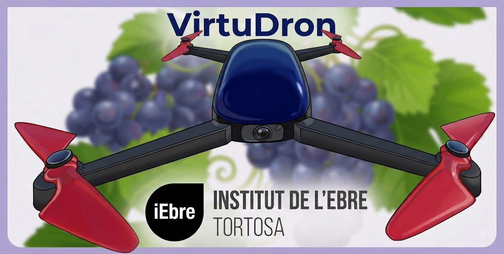
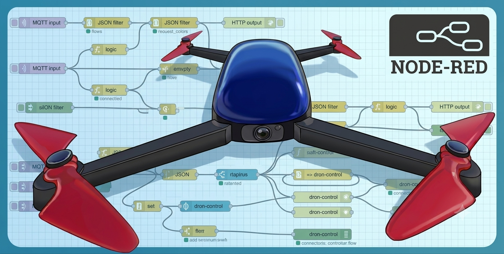

Què és VirtuDron?
VirtuDron és un simulador de drons especialment dissenyat per a l'aprenentatge de diferents tècniques de digitalització.
En el recurs adjunt es pot descarregar "VirtuDron: Joc_anells"/JocAnells_PC. Per a executar el simulador, els dos fitxers adjunts han d'estar descarregats en la mateixa carpeta.
Introducció al simulador
Aprèn a utilitzar el simulador VirtuDron.
Introducció a la realitat virtual i realitat mixta.
Introducció al món de la realitat virtual (VR) amb les Quest3s i el simulador VirtuDron.

Control remot del Dron
Control remot del dron mitjançant Node-Red. Envia comandes de desplaçament, enlairament i rep la telemetria en temps real a la teva pantalla.
Control del Tello en acció
Sessió pràctica de vol autònom utilitzant nodes personalitzats.

Detecció amb IA
Captura el vídeo de la càmera del dron i processa-ho amb OpenCV i TensorFlow. Reconeixement d'elements, seguiment de línies de cultiu i detecció de patrons.
Processament d'imatge en temps real
Integració dels algorismes de visió artificial amb la resposta del dron.

Agricultura de Precisió
Captura d'imatges aèries de vinyes per analitzar l'estat de la vegetació, detectar estrès hídric i optimitzar el tractament dels cultius a la comarca de la Terra Alta.
Aplicació real en vinya
Cas d'estudi de digitalització i fotogrametria aplicada al camp.